Premiados
1.º clasificado Scratch
¡Enhorabuena al ganador Scratch por su gran jornada!
10 de noviembre de 2026 · Entrega de premios, amigos y una gran jornada en La Bolera.
← Volver a los álbumes por mes
Enhorabuena a quienes destacaron en las clasificaciones de la jornada.
¡Enhorabuena al ganador Scratch por su gran jornada!
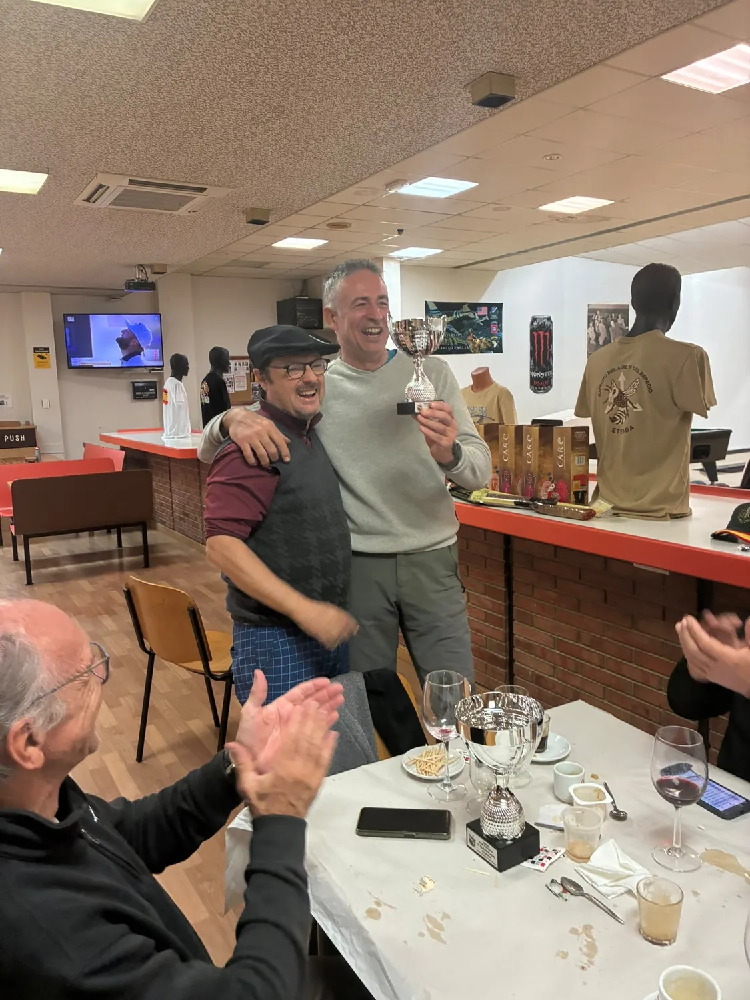
¡Felicidades por el primer puesto Hándicap!
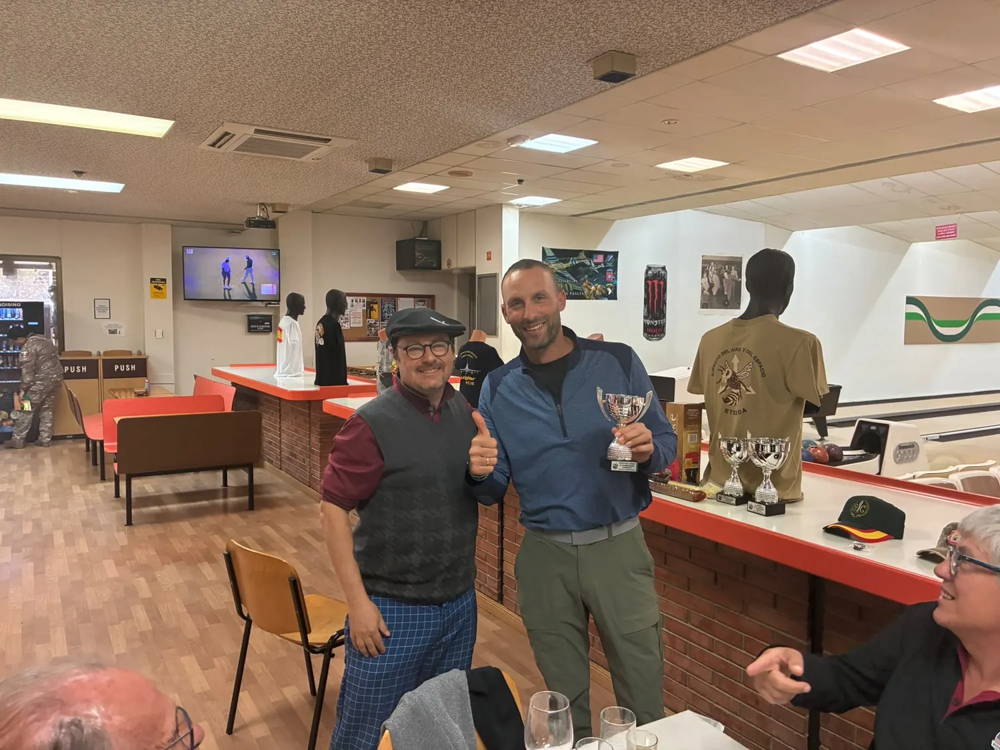
¡Enhorabuena por el segundo puesto Hándicap!
Los mejores recuerdos del torneo y de nuestra comida entre amigos.
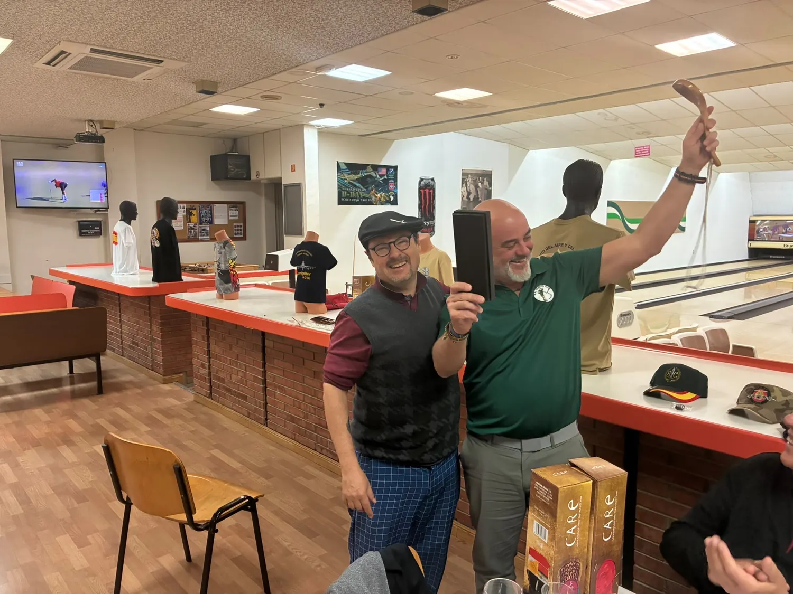
La entrega de premios, uno de los mejores momentos.
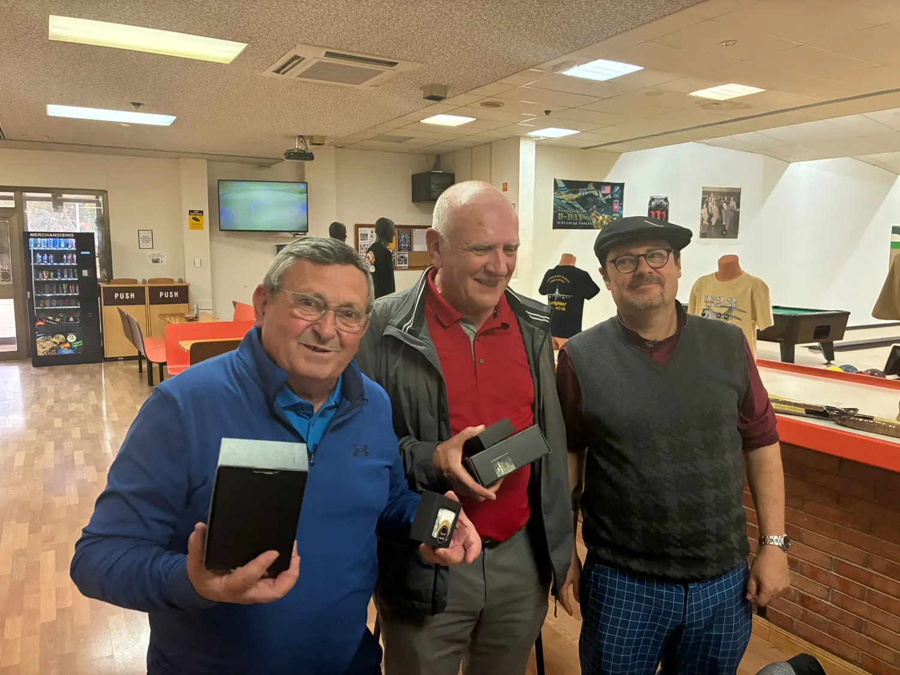
Un recuerdo de los premios de noviembre.
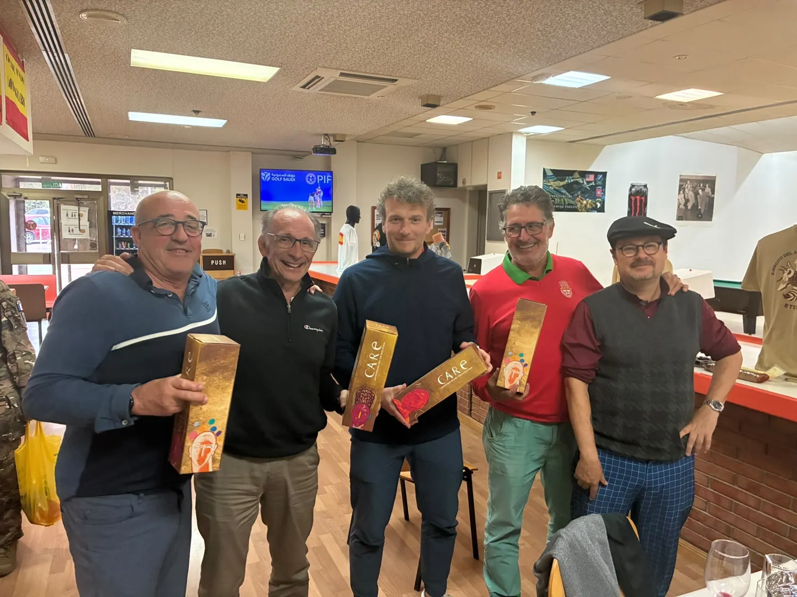
Agradecimiento especial a quienes apoyan el torneo.
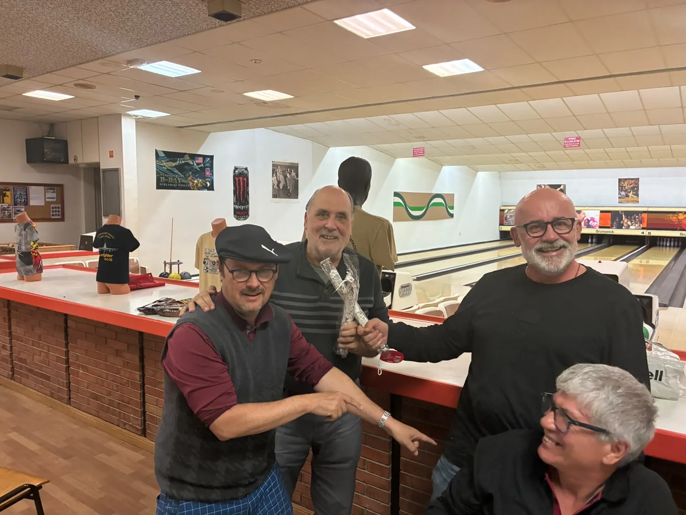
La alegría compartida tras una jornada de golf.
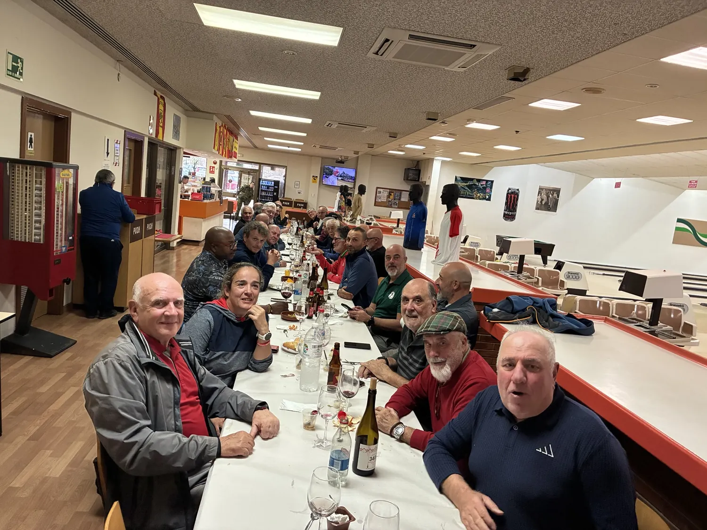
Una gran comida después del recorrido.
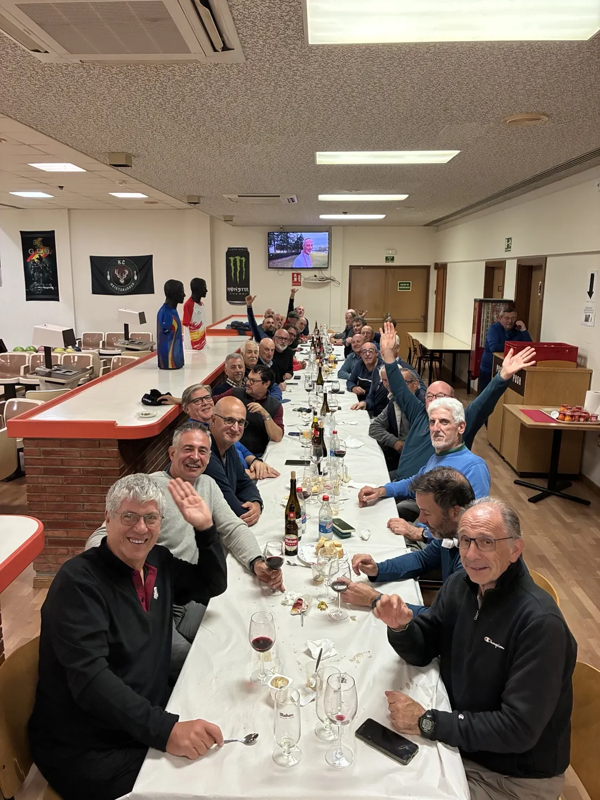
Golf, amistad y una buena sobremesa.
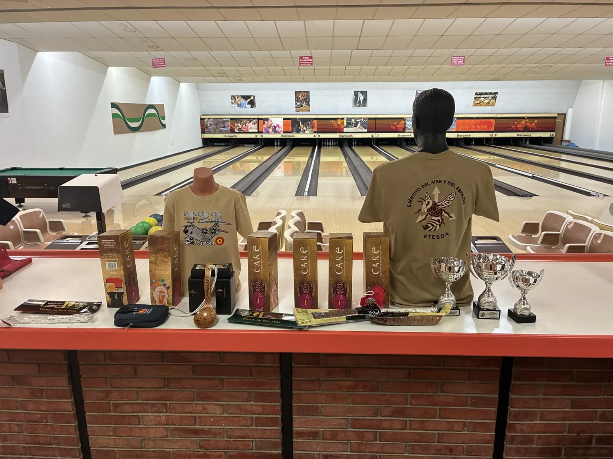
Celebrando juntos los resultados de noviembre.
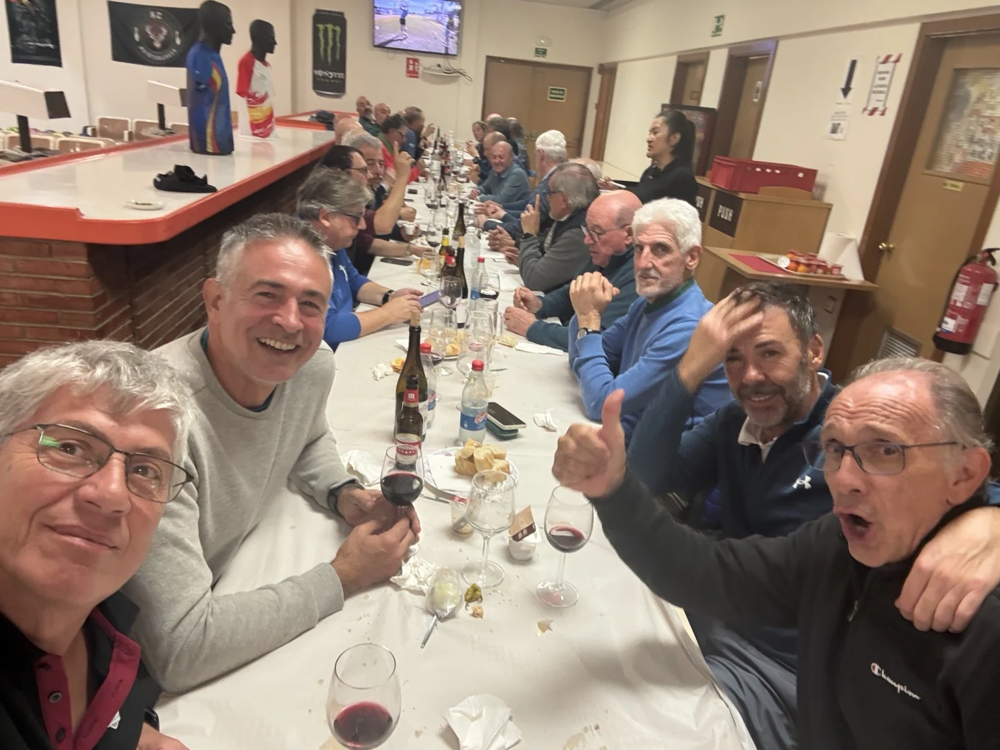
Otro de los reconocimientos de la jornada.
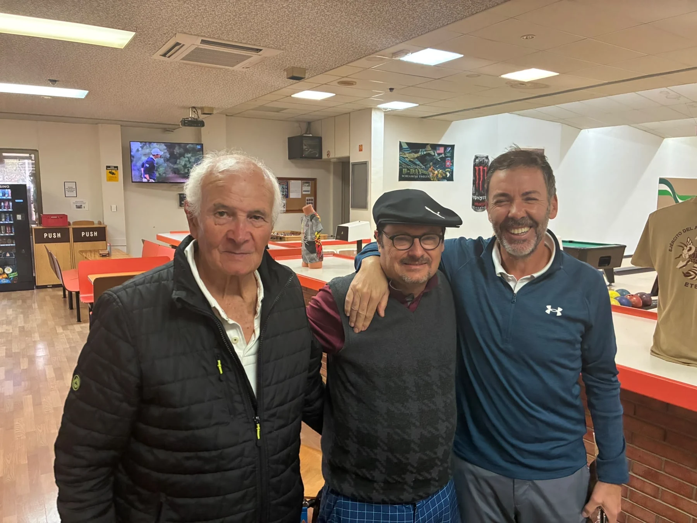
Una jornada que también se disfruta alrededor de la mesa.
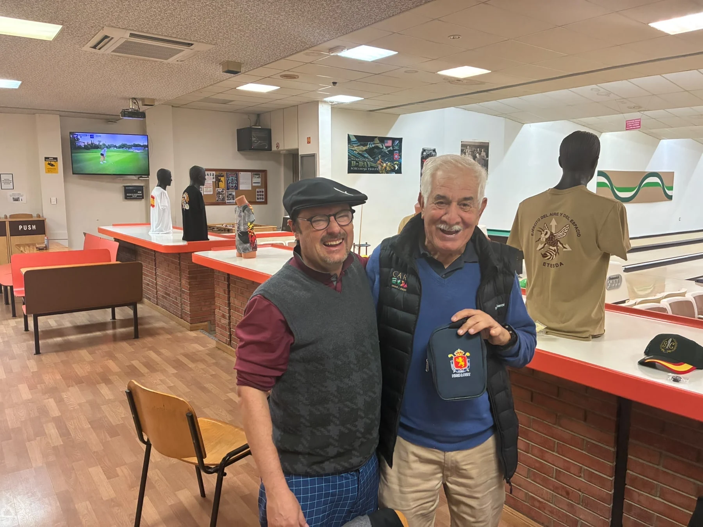
El encuentro después del golf.
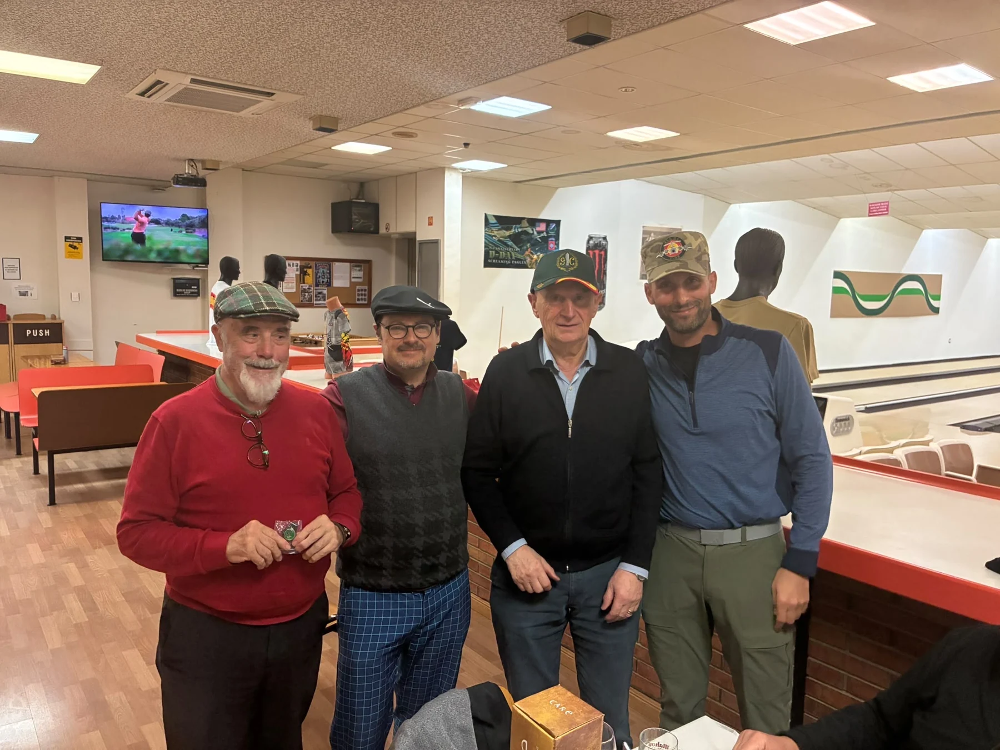
El mejor cierre para una jornada entre amigos.